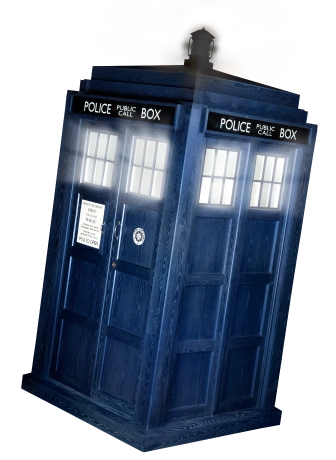
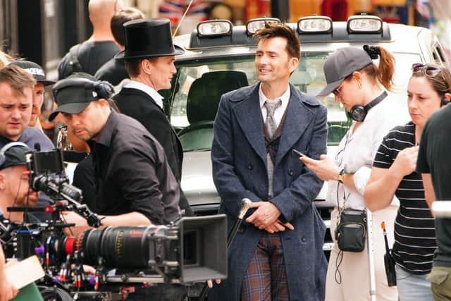

About
 Doctor Who is a British Sci-Fi TV show produced by the BBC that has been running since 1963. The show follows the mysterious protagonist, known only as The Doctor, as he travels through time and space— often accompanyed by companions —going on exciting and eventfull adventures.
The Doctor is an Alien TimeLord from the planet Gallifray with extraterestrial intellegence and two hearts, with a special love of humans. He does all he can to protect earth throughout time as he finds himself in dangerous situations.
As it is such a long standing show, The Doctor has an ability to regenerate once he dies which enables the current actor to pass the torch to another doctor while maintaining the same character. With each generation, typically there is a subsequent transition of companions accompanying this new
portrayal of the character.
History

As the longest running sci-fi TV show in existance, from 1963 till the present, Doctor Who has a long and very interesting history.
At present, there have been 14 regenerations of the main character with a much anticipated new regeneration to begin in november for the 60th anniversary.
There was a (quite long) haitus during the show between 1989-2005 which differentiates the two major era's of doctor who, colloquially refered to as "Classic Who" and "NuWHo".
Because it is such an old show, it is common for different generations to each have their own favourite regenerations of the doctor, often the first one they saw growing up.
The most popular classic who doctor is Tom Baker, who portrayed the 4th doctor. The most popular from New Who is generally either David Tennant (10th Doctor) or Matt Smith (11th Doctor).
Filming

Doctor Who is a BBc production and distributed by HBO Max in the USA. The series has been produced in house in Cardiff, Wales, since the reboot in 2005.
Because of its episodic nature as well as its very long run, it has become a British institution. It is a staple and significant part of British popular culture.
It is almost a right of passage for British actors to appear as extras on Doctor Who before they become successful.
Actors such as; Andrew Garfield, Daniel Kaluuya, Gemma Chan, and many more. Additionaly, past actors who have played the doctor have come back for special episodes, cameos, and anniversaries!